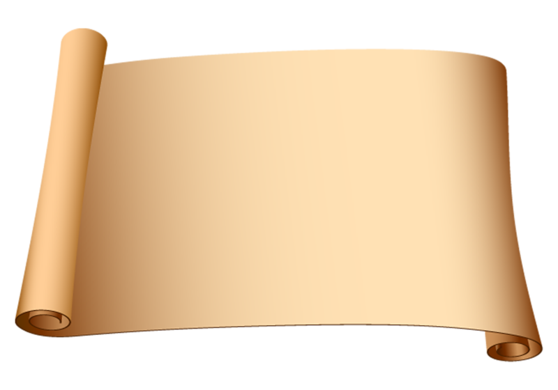
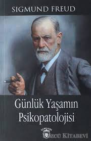

- Kadınlar Okulu (Andre Gide)
- Martin Eden (Jack London)
- Vahşetin Çağrısı (Jack London)
- Beyaz Diş (Jack London)
- Demir Ökçe (Jack London)
- Deniz Kurdu (Jack London)
- Kırmızı ve Siyah (Stendhal)
- Parma Manastırı Stendhal
- Karamazov Kardeşler (Fyodor Dostoyevski)
- Kumarbaz (Fyodor Dostoyevski)
- Budala (Fyodor Dostoyevski)
- İnsancıklar (Fyodor Dostoyevski)
- Yeraltından Notlar (Fyodor Dostoyevski)
- Ezilenler (Fyodor Dostoyevski)
- Delikanlı (Fyodor Dostoyevski)
- Beyaz Geceler (Fyodor Dostoyevski)
- Ecinler (Fyodor Dostoyevski)
- Öteki (Fyodor Dostoyevski)
- Savaş ve Barış (Lev Tolstoy)
- Hacı Murat (Lev Tolstoy)
- Diriliş (Lev Tolstoy)
- Bulantı (Jean-Paul Sartre)
- Don Kişot (Miguel de Cervantes)
- Üç Silahşörler (Alexandre Dumas)
- Kamelyalı Kadın (Alexandre Dumas
- Yabancı(Albert Camus)
- Monte Kristo Kontu(Alexandre Dumas)
- Vadideki Zambak( Balzac)
- Yüzbaşının Kızı(Puşkin)
- Zamanımızın Bir Kahramanı(Lermontov)
- Fareler ve İnsanlar (John Steinbeck)
- İnci (John Steinbeck)
- Drakula (Bram Stoker)
- Zaman Makinesi (H.G.Wells)
- Görünmez Adam (H.G.Wells)
- Dr. Moreau'nun Adası (H.G.Wells)
- Dünyaların Savaşı(H.G.Wells)
- Anna Karenina (Lev Tolstoy)
- İnsan Ne ile Yaşar (Lev Tolstoy)
- Moby Dick (Herman Melville)
- Çavdar Tarlasında Çocuklar (J. D. Salinger)
- Genç Werther'in Acıları (Johann Wolfgang von Goethe)
- Büyük Umutlar (Charles Dickens)
- Müşterek Dostumuz (Charles Dickens)
- Sineklerin Tanrısı (William Golding)
- 1984 -Bin Dokuz Yüz Seksen Dört (George Orwel)
- Çılgın Kalabalıktan Uzak (Thomas Hardy)
- Tess (Thomas Hardy)

KONUŞAN KİTAPLIĞIM
Duyan Gözler İçin
OKUMA

Sanatsız kalan bir milletin,
hayat damarlarından biri
kopmuş demektir.
M.Kemal ATATÜRK
TAV
Sİ
YE
Kİ
TAP

Yazar:S.Freud
Tür:Psikoloji
Günlük
Yaşamın
Psikopatolojisi